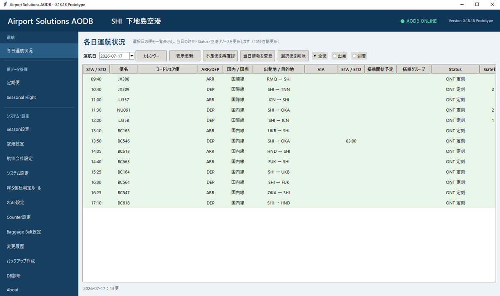
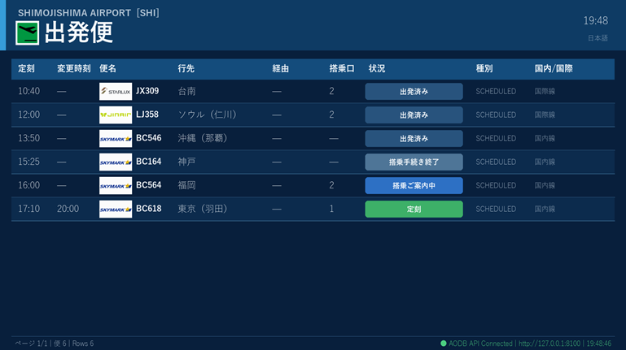

Airport IT, Built for Operations
空港の現場を、
空港の現場を、
動く仕組みに。
空港業務の知識と実装力を組み合わせ、AODB、FIDS、PRS、案内表示、オフライン印刷を開発。パソコン、モニター、プリンターなどの機器調達から設定・導入まで、窓口を一本化して支援します。

開発中の製品・ソリューション
構想だけではなく、実際に動作するプロトタイプを開発し、画面・運用・機器連携を検証しています。
システムと機器を、まとめて導入
業界特殊機器をお客様が個別に調査・調達する必要はありません。一般OA機器から業務用プリンター、バーコードリーダー等まで、用途と接続条件を確認したうえで選定・販売し、使える状態まで整えます。
運用を止めないための設計
シンプル
不要な外部依存や複雑な構成を避け、現場で理解しやすい仕組みにします。
メンテナンスしやすい
設定の外部化、明確なログ、引き継ぎやすい構成を開発の標準とします。
復旧しやすい
障害時に現場で判断しやすく、短時間で通常運用へ戻せることを重視します。
最新情報
- 開発中の製品情報と画面イメージを公開しました。
- 会社情報、サービス内容およびウェブサイトデザインを更新しました。
- ウェブサイトを公開しました。
空港ITに関するご相談
既存業務の課題整理、製品の検証、導入・運用方法など、構想段階からご相談いただけます。